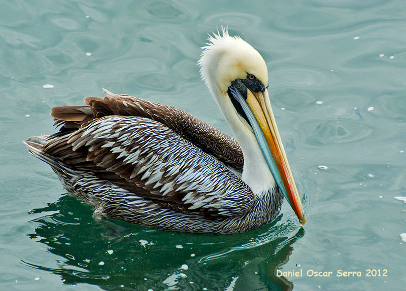
It is a species of seabird in the Pelecanidae family that lives in South America, breeding in loose colonies in Piura in northern Peru. Currently, it is considered a separate species of pelican, not a subspecies of the brown pelican.
Sea Lion
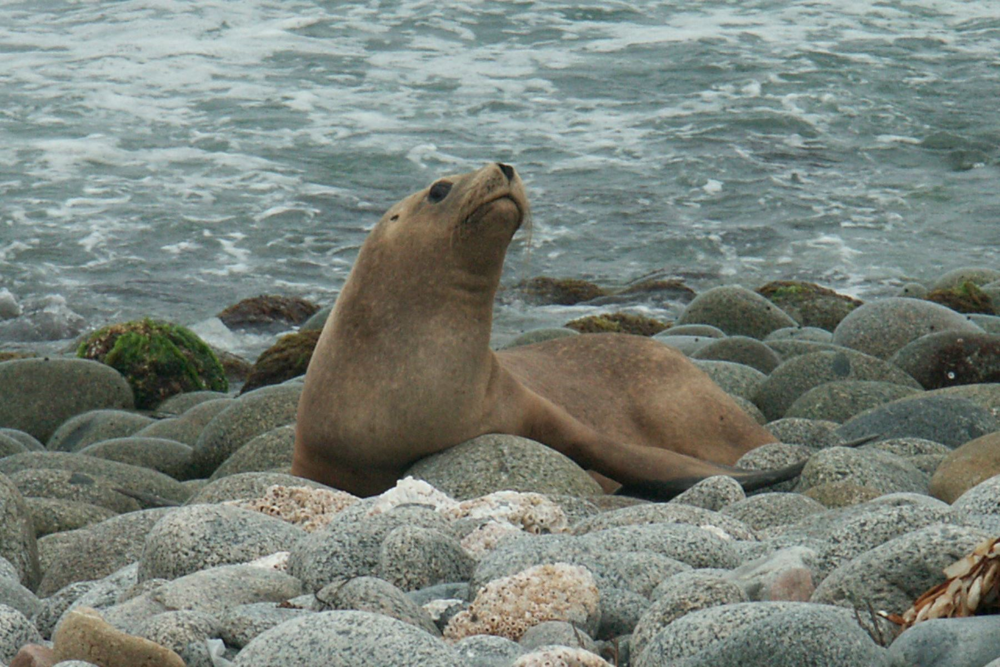
Sea lions are pinnipeds characterized by external ear flaps, long foreflippers, the ability to walk on all fours, short and thick hair, and a big chest and belly. Together with the fur seals, they make up the family Otariidae, eared seals.
Humboldt Penguin
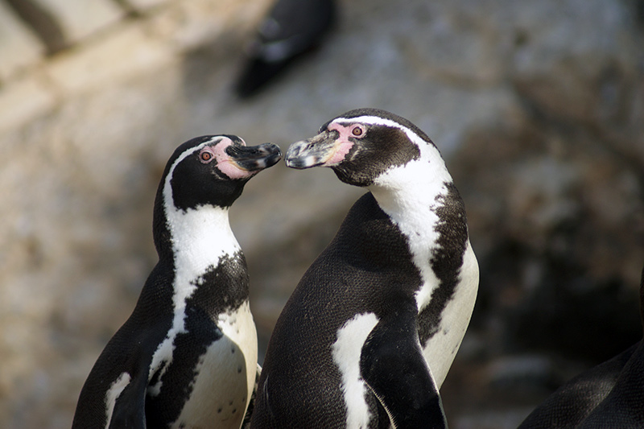
It is a medium-sized penguin. It resides in South America, along the Pacific coast of Peru and Chile. The Humboldt penguin and the cold water current it swims in both are named after the explorer Alexander von Humboldt.
Leatherback Sea Turtle
It is the largest of all living turtles and the heaviest non-crocodilian reptile, reaching lengths of up to 2.7 metres and weights of 500 kilograms. It is the only living species in the genus Dermochelys and family Dermochelyidae.
Blue-footed Booby
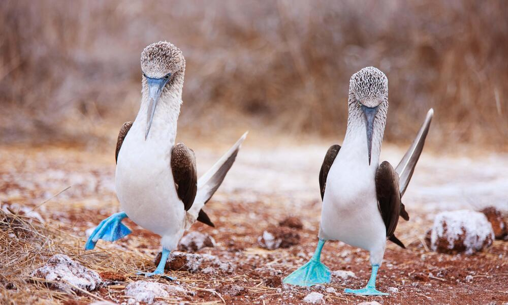
It is a marine bird native to tropical regions of the Pacific Ocean. It is one of six species of the genus Sula and it is recognizable by its distinctive bright blue feet, which is a sexually trait and a product of their diet.
Inca Tern
It is a near-threatened species of tern in the subfamily Sterninae of the family Laridae. It is found along the Pacific coasts of Chile, Ecuador and Perú, and has appeared as a vagrant in Central America and Hawaii.
Highlands Region 🗻
Aldean Condor
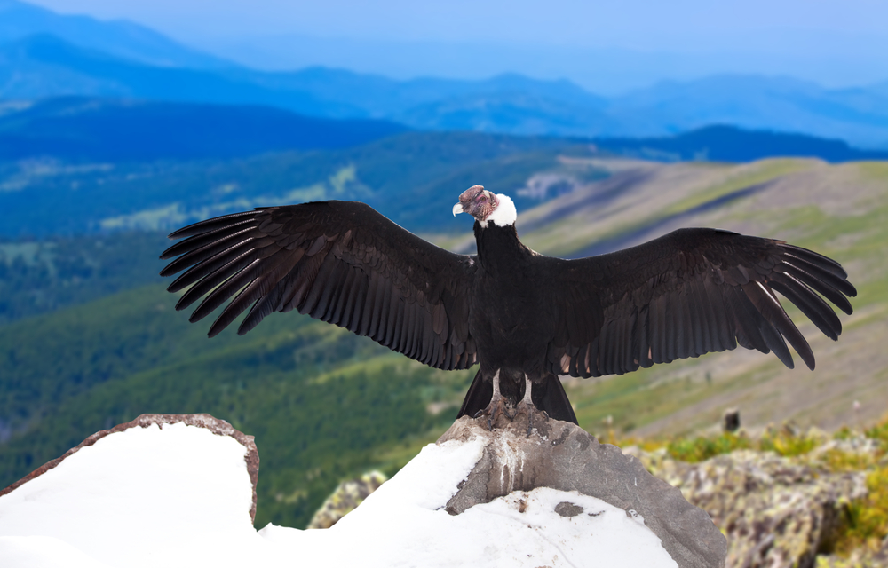
It is a South American vulture and the only member of the genus Vultur. It is found in the Andes mountains and adjacent coasts. With a wingspan of 3.3 m and weight of 15 kg, the Andean condor is the largest flying bird.
South American Cougar
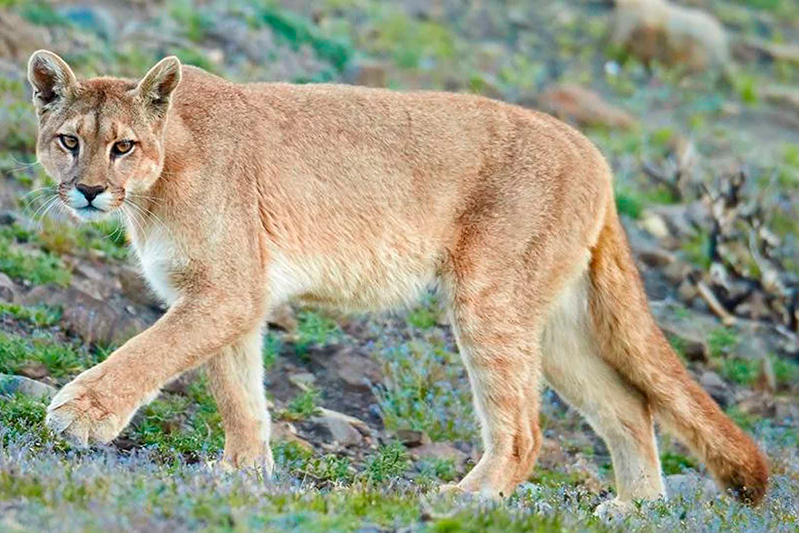
Also known as the Andean mountain lion or puma, is a cougar subspecies occurring in northern and western South America, from Colombia and Venezuela to Peru, Bolivia, Argentina and Chile.
Alpaca
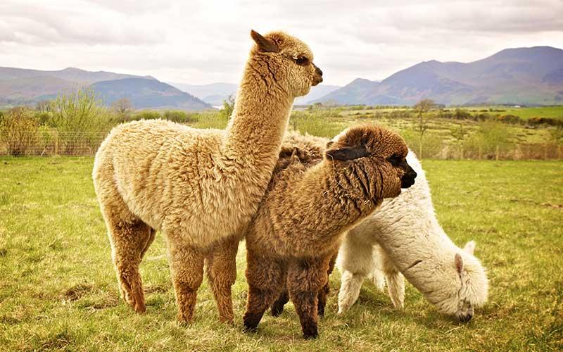
It is a species of South American camelid mammal. Traditionally, alpacas were from the level heights of the Andes of Peru, Bolivia, Ecuador, and Chile. Nowadays, Alpacas have become popular around the world.
Andean fox
The culpeo, also known as the Andean fox or colpeo fox, is a species of South American fox. Despite the name, it is not a true fox, but more related to wolves and jackals. Its appearance resembles that of foxes due to evolution.
Guinea Pig
They are a kind of rodent. They are not pigs and are not from Guinea. The reason for why this is the name is unclear. They are also called cavies or cuyes. They are domesticated animals which originated in the Andes.
Andean Cock of the Rock
Also known as tunki, is a bird of the cotinga family native to Andean cloud forests in South America. It is the national bird of Peru. It has four subspecies and its closest relative is the Guianan cock-of-the-rock.
Jungle Region 🌳
Jaguar
It is a large cat species and the only member of the genus Panthera that is native to the Americas. With a body length of 1.85 m and a weight of 158 kg, they are notorious for their ambush techniques and powerful arsenal.
Capibara
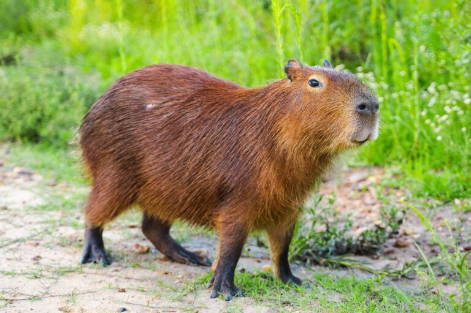
It is the largest living rodent, native to South America. It is a member of the genus Hydrochoerus. They are known to be gentle and calm around other species, and capable of hold their breath for under five minutes.
Anaconda
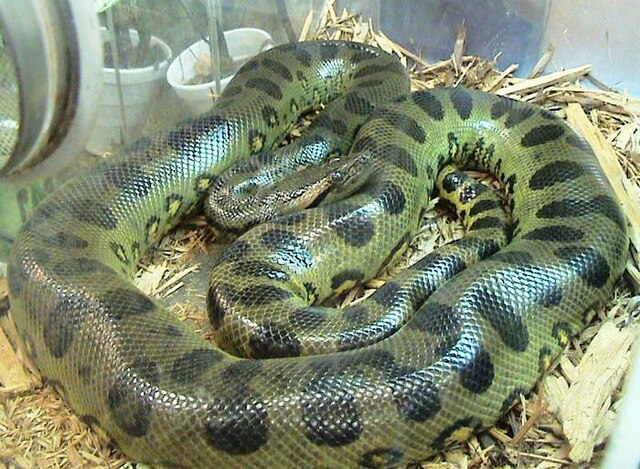
Anacondas or water boas are a group of large boas of the genus Eunectes. They are a semiaquatic group of snakes found in tropical South America. Instead of using their venom, they constrict their victims with their bodies.
Yellow-tailed woolly monkey
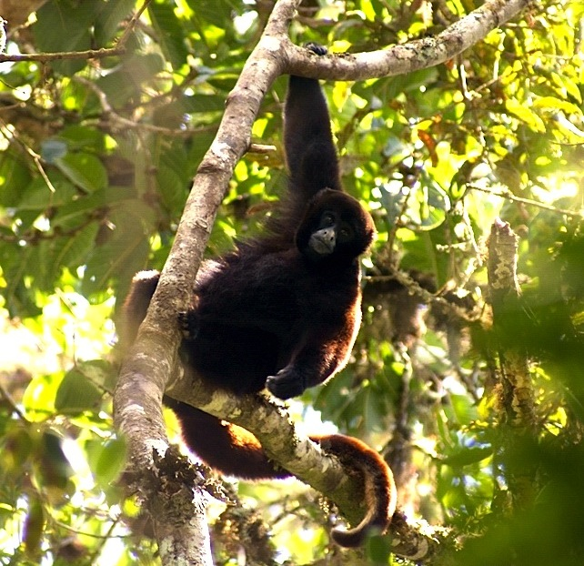
This rare primate is found only in the Peruvian Andes and are critically endangered due to deforestation and hunting. They tend to live in high elevations, averaging around two thousand meters above sea level.
Anteater
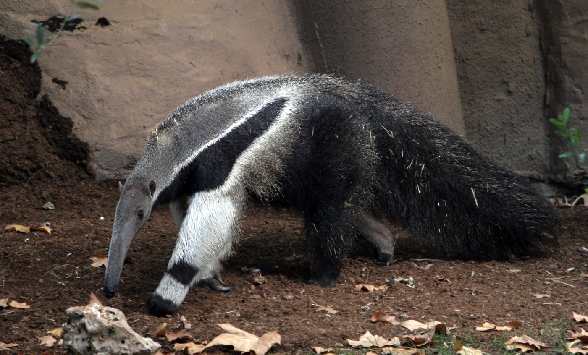
They are the four extant mammal species in the suborder Vermilingua (meaning "worm tongue"), commonly known for eating ants and termites. Together with sloths, they are within the order Pilosa.
Black Caiman
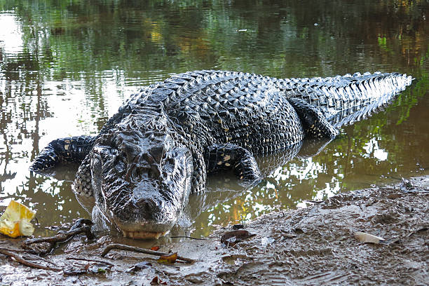
It is a crocodilian reptile endemic to South America. With a maximum length of 6.5 m and a mass of over 450 kg, it is the largest living species of the family Alligatoridae. As an adult, it has a dark greenish-black coloration.
International Region 🦁
Hipopotamus
It is a large semiaquatic mammal native to sub-Saharan Africa. It is one of only two extant species in the family Hippopotamidae, the other being the pygmy hippopotamus. Its name comes from the ancient Greek for "river horse".
Lion
It is a cat of the genus Panthera, native to Africa and India. It has a muscular, broad-chested body; a short, rounded head; round ears; and a dark, hairy tuft at the tip of its tail. It is a social species, forming groups called prides.
Giraffe
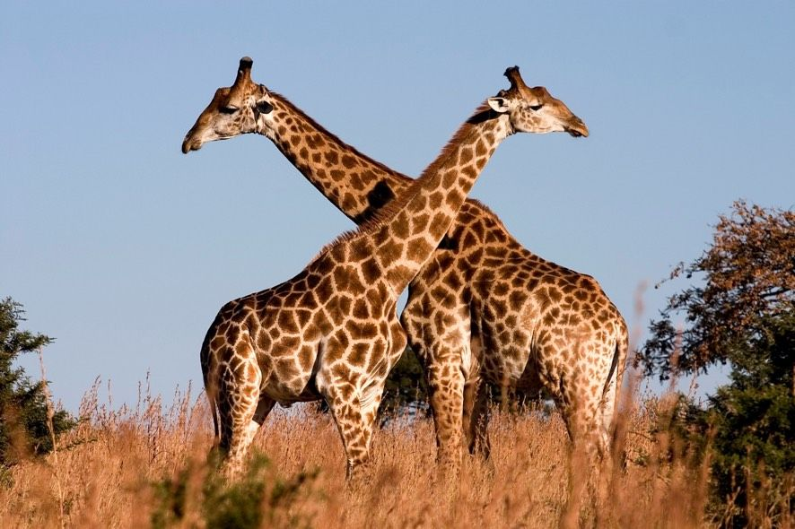
It is a large African hoofed mammal belonging to the genus Giraffa. It is the tallest living terrestrial animal. The giraffe's characteristics are its extremely long neck and legs, horn-like ossicones, and spotted coat patterns.
Wildebeest
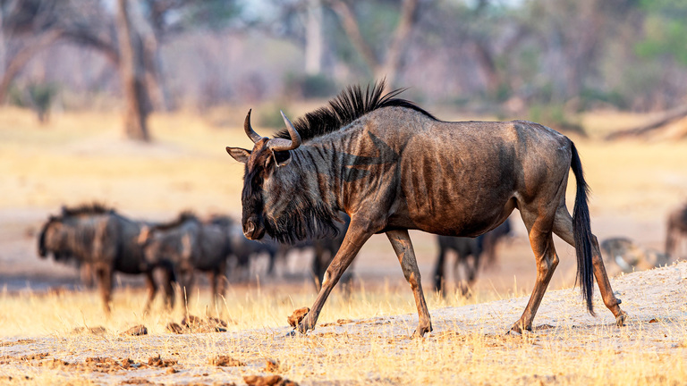
Also called gnu are antelopes of the genus Connochaetes and native to Eastern and Southern Africa. They belong to the family Bovidae. There are two species of wildebeest: the black wildebeest, and the blue wildebeest.
Gorilla
They are herbivorous, predominantly ground-dwelling great apes that inhabit the tropical forests of equatorial Africa. The genus Gorilla is divided into two species: the eastern gorilla and the western gorilla.
Zebra
They are African equines with black-and-white striped coats. The three living species: Grévy's zebra, the plains zebra, and the mountain zebra. Zebras share the genus Equus with horses and asses, forming the family Equidae.